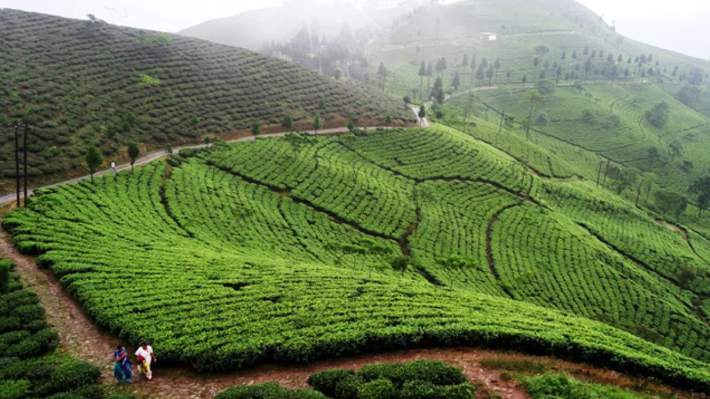
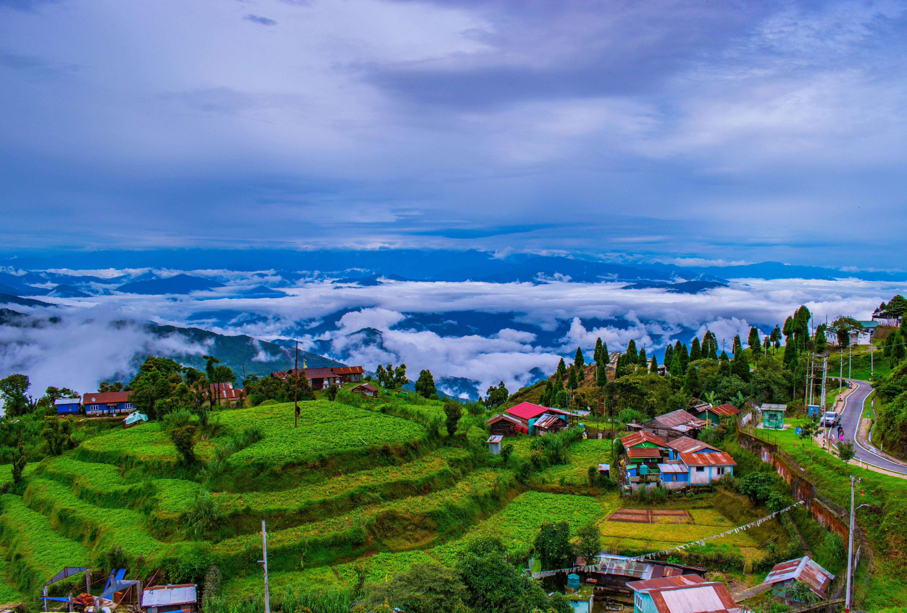
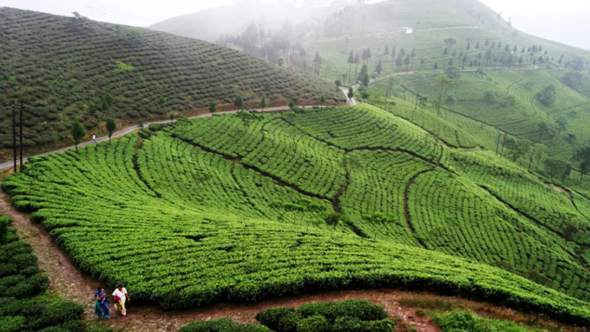
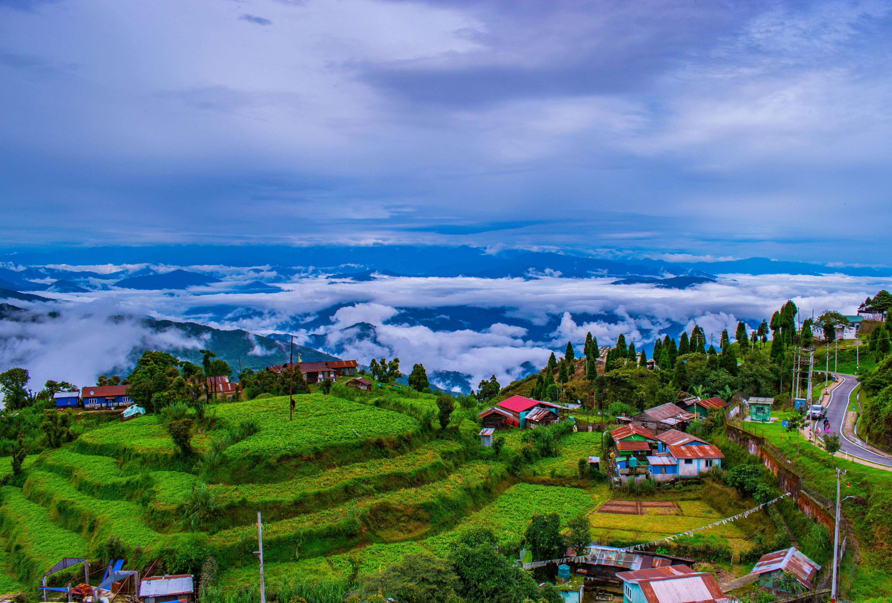
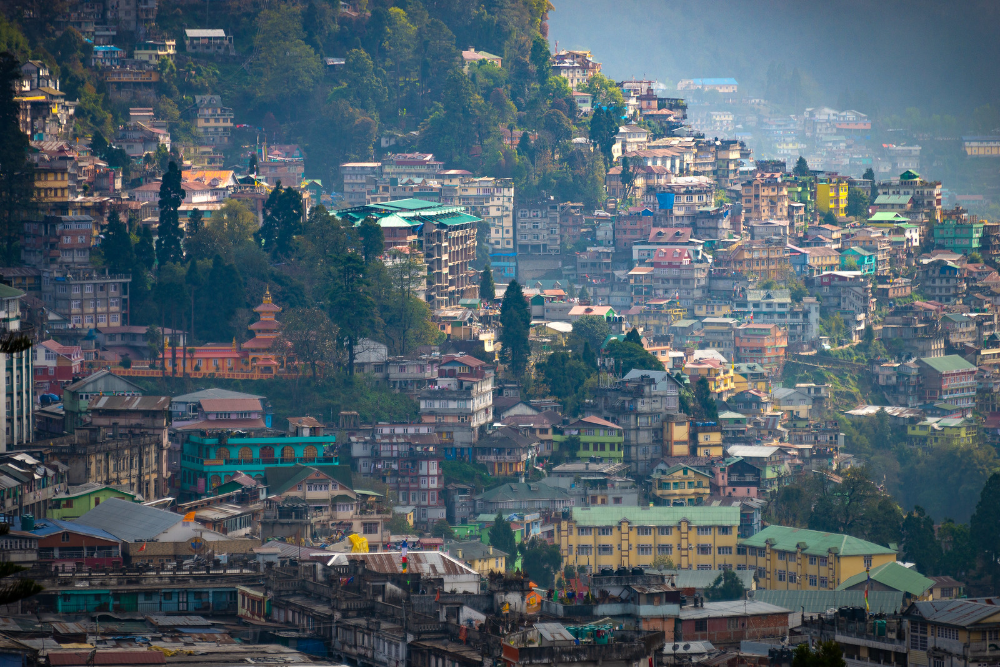
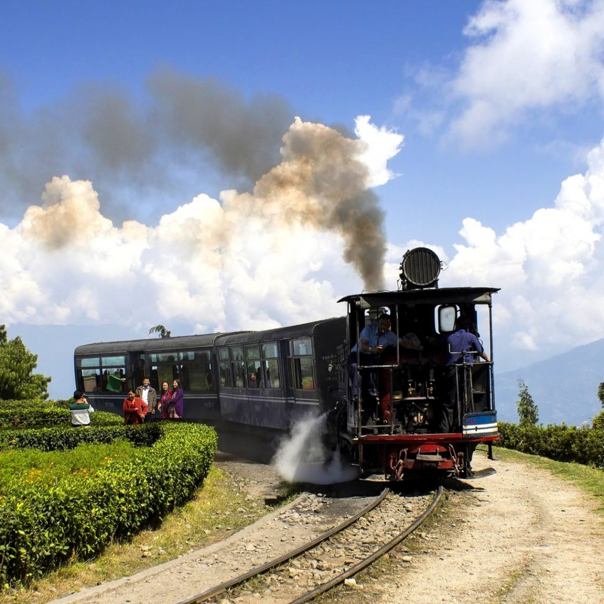
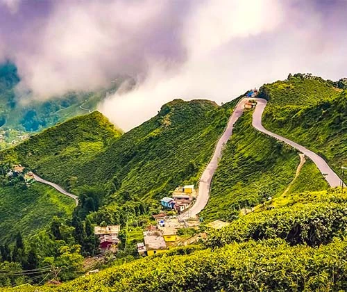
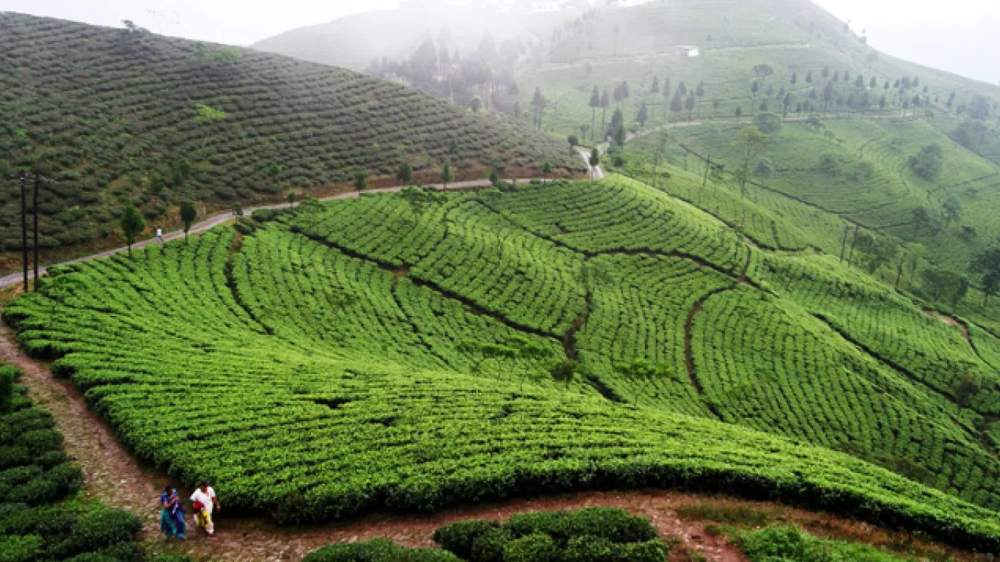
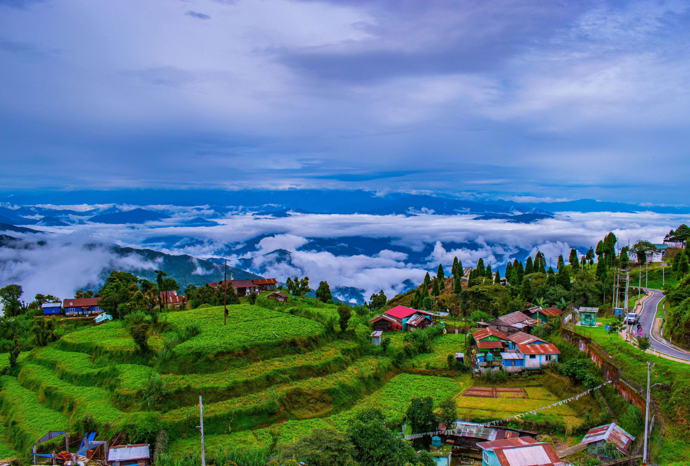

Darjeeling is a city in the northernmost region of the Indian state of West Bengal. Located in the Eastern Himalayas, it has an average elevation of 2,045 metres (6,709 ft). To the west of Darjeeling lies the easternmost province of Nepal, to the east the Kingdom of Bhutan, to the north the Indian state of Sikkim, and farther north the Tibet Autonomous Region region of China. Bangladesh lies to the south and southeast, and most of the state of West Bengal lies to the south and southwest, connected to the Darjeeling region by a narrow tract. Kangchenjunga, the world's third-highest mountain, rises to the north and is prominently visible on clear days

